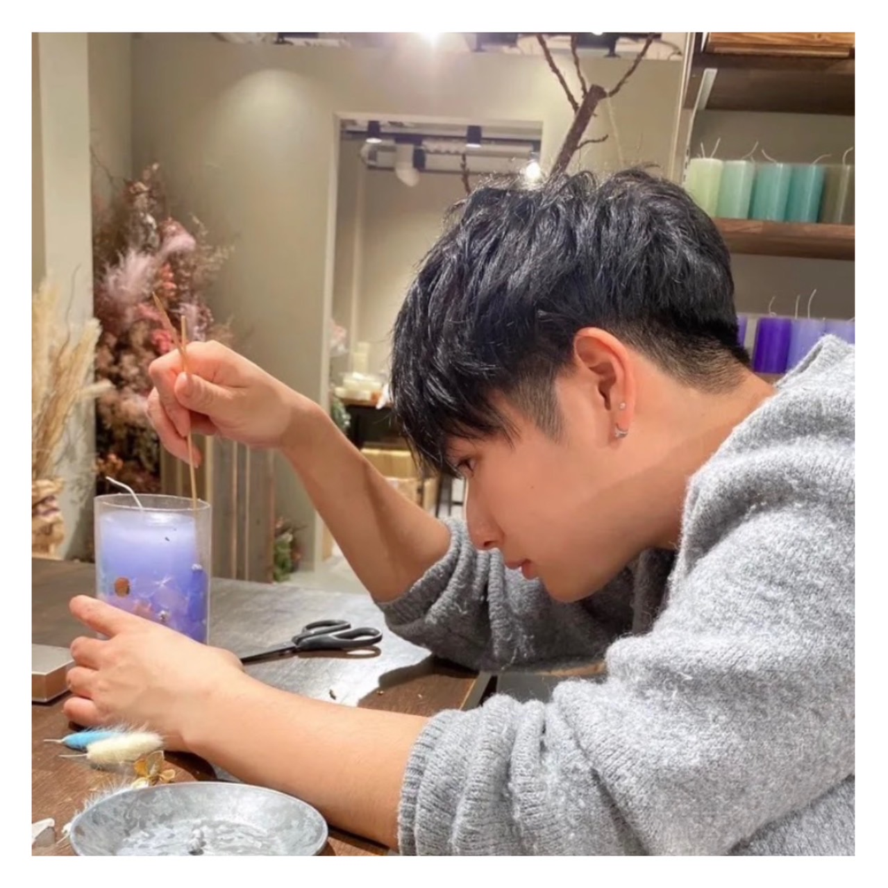
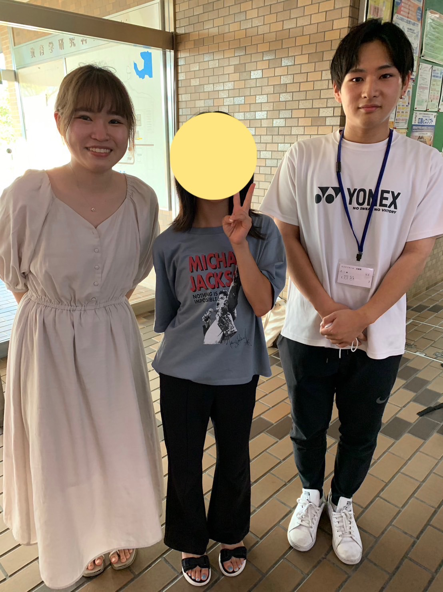
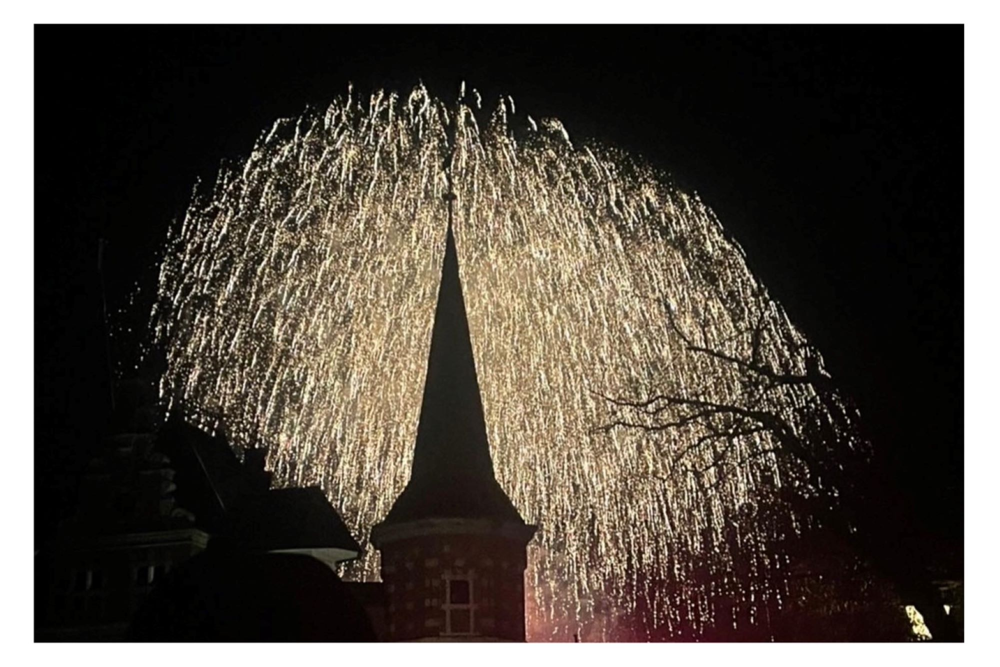
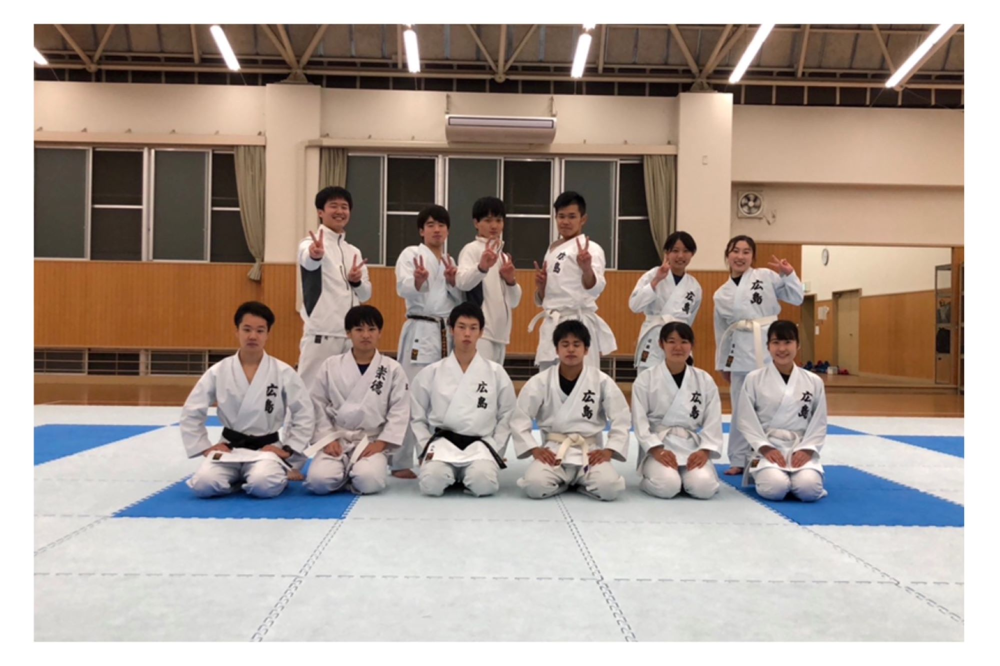
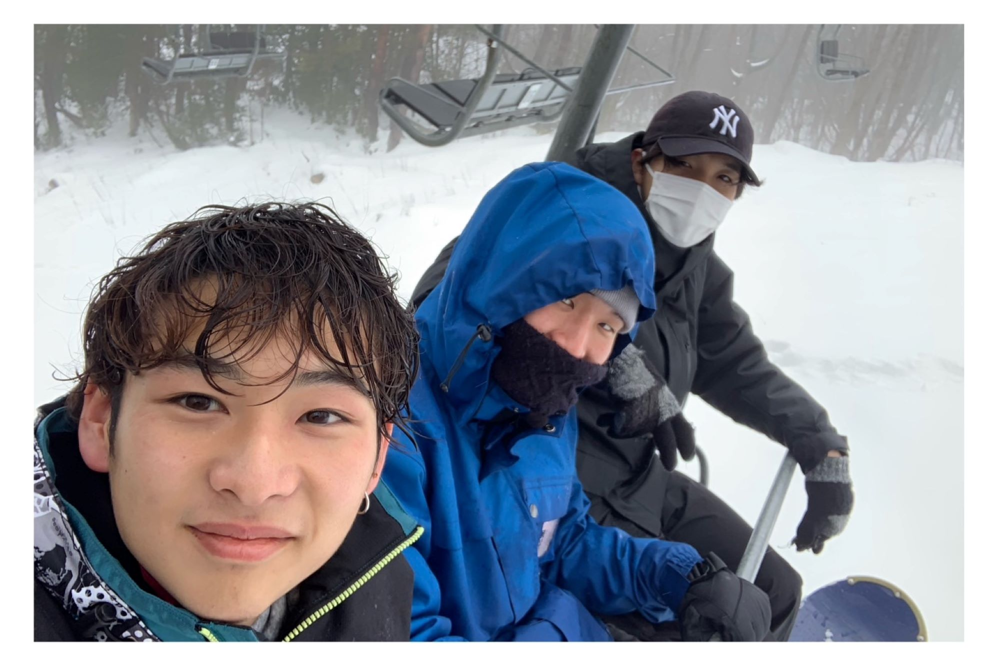
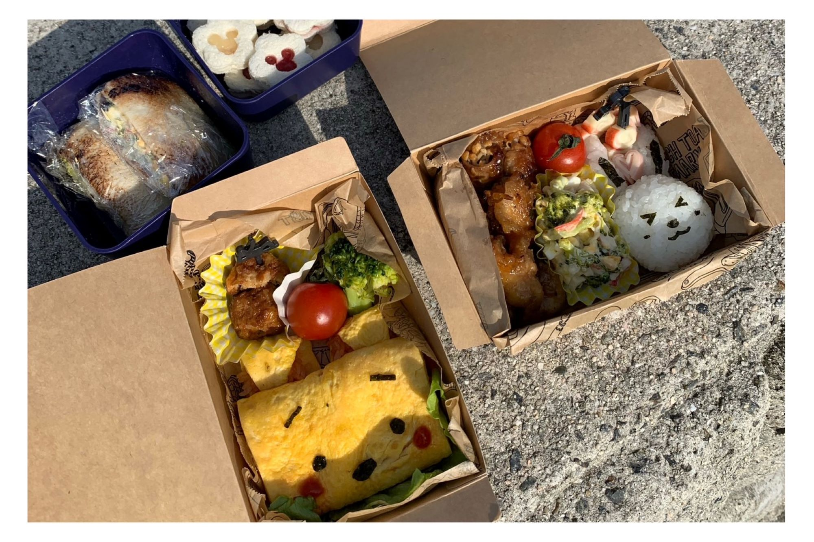
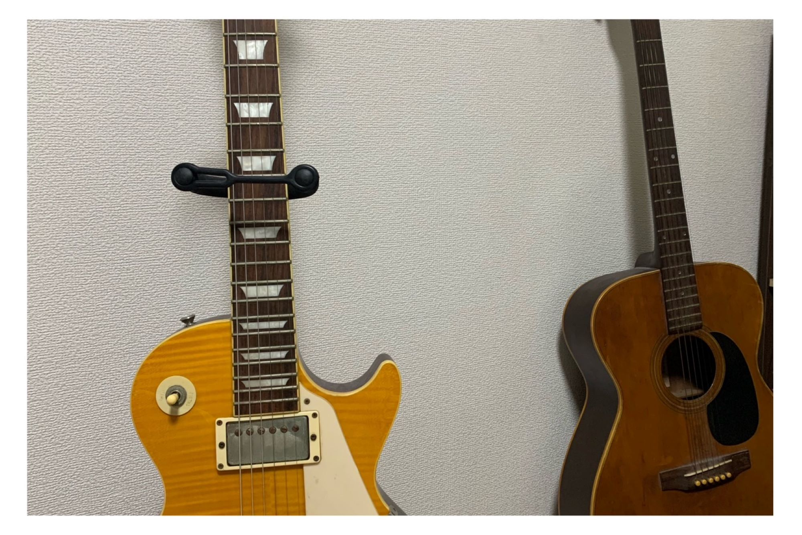

About

大方悠真
- 24歳 広島県広島市出身
- 広島大学院で「子どもの成績を上げる勉強法・指導法」の開発をしている
- 趣味は旅行・空手・スノーボード・料理・ギターなど
- 半年前、彼女に浮気をされました。理由はさみしかったかららしい
Works

- 対象：小学5年生女子
- 指導した方略：図表活用方略
- 成果１：文章問題の正答率が向上した
- 成果２：算数に対する自己肯定感の向上
Hobby

クリスマスにハウステンボスに行った時の写真。

広島大学空手道部の集合写真。

スノーボードに行った時の写真。この時はジャンプ台に行きました。

僕はぷーさんのキャラ弁を作りました。

まだまだ初心者です。もっとうまくなりたいです。